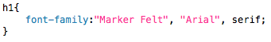
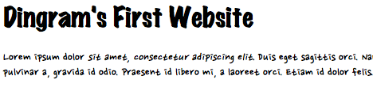
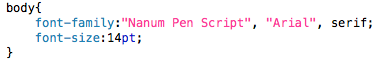
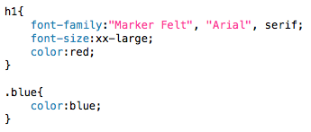
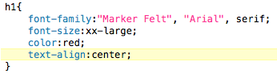

Web Site Design & Construction
Finally, we can get rid of that awful default font-face! Actually, I don't know what your default font is, but I quite like mine. Regardless we're going to change it. We're going to change the size. We're going to change the colour. We're going to change the alignment. We might even add some text decoration based on how I'm feeling.
First thing we're going to do is change the font. Nobody likes the default font. Yes, I know what I just said! Ignore that. We're going to change the font-face using the font-family attribute. Logical, eh? Who says computer scientists aren't intemelectual! Find a font you like, preferably one on your machine. If you can't find one you like, select one from the Google Fonts page. I'm going to use a cool one on my iMac called "Marker Felt", purely to prove a point. I want to use this as my heading font, so I need to put the line of code within my h1 selector. Change your font like this:
My h1 font stack. 
You'll notice that my font-family attribute has more than just the single font which I wanted to use. This is incredible foresight by myself as I am keenly aware that not all people will have the awesome font known as "Marker Felt" on their computer. Therefore we have to accomodate for when this font isn't on the device. This is called a font stack. If the first font cannot be found then it defaults to the second font, "Arial" - you should have heard of that one. If that cannot be found then it will default to the generic serif font on the computer being used to view the page. These font stacks can be as big or small as you want them to be. I advise they're around 2 or 3 fonts long. Feel free to add a font stack to your body selector as well, this will change the default font for the whole page. I'm going to choose "Nanum Pen Script" as my main page font. Fun times!
I have a problem. See if you can identify what it is with this screen of my current web page being rendered in a browser:
Why is my text so small?! 
Spot it? My main body text is far too small. What a pain. This means that we're going to have to change our text size. I wonder how we would do that. Well, it's quite simple, we use the font-size attribute. I'm going to put this into our body style. Make our font a little bit bigger. Like so:
CSS, MAKE ME BIGGER! 
The font size can be changed in a number of ways, all described here. I like using the length modifier, no idea why. Just do. The issue I have now, won't screenshot it as you should be able to imagine it, is that my heading is too big. So I'm going to change the size of that back to what it was, I'm also going to change the colour of the heading. To do this we use the color attribute. Unfortunately it might take a little getting used to writing colour the American, but you'll soon adapt. The colour of elements can be changed in a number of ways (see here), I like to think that the most efficient way is through the Hexadecimal colours, either that or the 17 named colours that the browser identifies. I'm going to change the heading of my website to a nice red, and I'm also going to go into our "blue" class and change that colour to blue, because that was the point of creating that class.
I have changed the colour of my h1 tag to red, and the colour of my blue class to blue. 
The above CSS will change the colours of some of my text, feel free to change more of yours if you want to. The next thing I want to do is align my heading to the centre of the page. This is done quite simply.
The text-align attribute dictates where the text will be aligned. The properties able to be applied to this attribute are right, left and center (again, the American spelling...), for my website I'm going to align my heading to the centre, like so:
Alignment. Normally I'm chaotic good or lawful evil. Wait, wrong game. 
Next »That's about it for text manipulation. You can add underlines to your text by using text-decoration:underline; you can make it bold by using font-weight:bold; and you can make it italic by using font-style:italic; though the latter two are made redundant by the presence of strong and em respectively. Next on the agenda - positioning and manipulating elements.